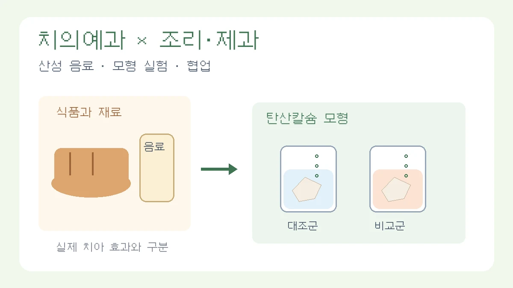

치의예과·조리제과 공동 탐구: 산성 음료와 달걀껍데기 모형 실험
1주일 계획 예시와 개인의 기여 기록, 임상 효과를 과장하지 않는 결론
목차
- 네 주제의 조정
- 산성 음료 모형 설계
- 1주일 실험 계획
- 반응식과 결과 해석
- 역할과 공동 검토
- 보고서와 후속 탐구
핵심 요약
- 탄산칼슘 모형과 법랑질 구분
- 대조군·반복·안전 관리
- 재광화·예방 효과 단정 금지

치의학과 조리·제과에 관심 있는 학생이 함께 탐구한다면 식품의 성질과 산 반응을 공통 질문으로 삼을 수 있습니다. 다만 학교의 단순 모형 실험으로 실제 치아 손상이나 예방·치료 효과를 판정할 수는 없습니다. 이 글은 고1 수준에서 약 1주일의 준비·관찰·분석 계획을 세우는 예시이며, 교사의 지도와 학교 안전 지침에 맞춰 범위를 조정해야 합니다. 융합 주제나 협업이 특정 평가 등급·합격을 보장하지 않습니다.
1. 원고의 네 주제는 어떻게 좁히면 좋을까?
① 음료의 산성과 탄산칼슘 모형의 질량 변화
달걀껍데기는 탄산칼슘이 주성분이고 실제 치아 법랑질은 주로 아파타이트 계열 광물로 이루어져 있습니다. 따라서 달걀껍데기를 실제 법랑질과 같은 물질이라고 부르지 않고, 산과 탄산칼슘의 반응을 살펴보는 제한적인 모형으로 사용합니다. pH와 질량 변화가 측정 가능한지 예비 실험으로 확인하세요.
② 당의 종류와 발효
제빵용 효모를 사용하면 식품 발효를 탐구할 수 있지만 효모는 구강 세균 모형과 동일하지 않습니다. 이 결과로 충치 발생이나 자일리톨의 구강 세균 억제를 입증하지 않습니다. 구강 시료나 정체불명의 미생물을 학교·가정에서 임의로 배양하지 마세요. 안전한 발효 실험도 교사 승인과 적절한 지도가 필요합니다.
③ 빵 섭취와 입안 pH
사람을 대상으로 하면 개인차뿐 아니라 동의·위생·학교 연구 지침의 문제가 있습니다. 입안 pH를 타액이나 치태 pH와 혼동하지 않습니다. 이번 계획에서는 인체 실험을 제외하고 식품 수용액의 성질을 비교하는 범위로 바꿀 수 있습니다. 단순 수용액이나 인공 타액도 실제 구강 환경을 재현한다고 단정할 수 없습니다.
④ 제과 재료와 재광화
자일리톨·알룰로스 수용액에 담근 달걀껍데기의 질량이 늘었다고 치아 재광화가 입증되지는 않습니다. 잔류 시료·침전·수분 때문에 질량이 달라질 수 있고, 모형의 광물도 법랑질과 다릅니다. 짧은 탐구에서는 재광화 효능 실험보다 관련 문헌을 읽고 어떤 물질·이온·조건·측정이 필요한지 정리하는 후속 과제로 남기는 편이 적절합니다.
2. 추천 설계: 산성 음료와 달걀껍데기의 질량 변화
질문: 정해진 시간과 조건에서 서로 다른 음료에 담근 달걀껍데기의 질량 변화는 어떻게 다르며, 초기 pH만으로 그 차이를 설명할 수 있는가?
통합과학의 산·염기와 화학 변화 개념을 연결하되 실제 이수 단원과 교과서 구성부터 확인합니다. 당류 종류·음료 산도·완충·재광화를 한 번에 바꾸지 않습니다. 기본 실험에서는 대조군과 두 가지 음료 정도로 좁힙니다.
- 대조군: 물에 담근 시료. 대조군의 변화도 측정합니다.
- 비교 조건: 음료 종류. 초기 pH는 측정해 기록하되 종류와 함께 산의 양·종류 등 여러 성분도 달라진다는 점을 밝힙니다.
- 통제 조건: 시료량, 노출 시간, 온도, 용기, 시료 준비·세척·건조 절차, 표면적의 근사적 범위.
- 측정: 초기·최종 pH, 초기·최종 건조 질량, 관찰 사진과 기록. 거품 사진은 정량적인 기체 부피 측정을 대신하지 않습니다.
- 반복: 가능하면 조건당 독립된 시료 3개 이상을 준비합니다. 이것만으로 통계적 신뢰성이 보장되는 것은 아닙니다.
준비물: 지도자가 승인한 음료와 물, 세척·준비된 달걀껍데기, 표시된 용기, 저울, pH 시험지 또는 pH 미터, 타이머, 보안경·장갑 등 지침에 맞는 보호구. 저울의 표시 분해능 0.01g은 측정 정확도 0.01g을 자동으로 뜻하지 않습니다. 예상 변화가 측정 불확도보다 작다면 실험 규모나 측정 방법을 조정하거나 검출하기 어렵다고 보고합니다.
안전: 날달걀 취급과 깨진 껍데기의 위생·절단 위험을 관리하고 교사 지도 아래 시료를 준비합니다. 실험에 쓴 음료·재료는 먹지 않습니다. 강산·강염기를 사용하지 않으며, 탄산칼슘과 산의 반응 용기를 밀봉하지 않습니다. 시약·잔여물 처리는 학교 지침을 따릅니다.
3. 1주일 계획: 예비 측정부터 한계 분석까지
- 1일차: 질문과 조건을 정하고 역할·출처·안전 계획을 기록합니다. 실험실과 도구 사용 승인을 확인합니다.
- 2일차: 껍데기의 막 처리, 크기·표면적, 세척·건조 절차를 통일하고 예비 측정으로 저울과 pH 측정의 한계를 확인합니다.
- 3~5일차: 정한 노출 시간에 따라 독립 시료를 관찰합니다. 12·24·48시간을 비교한다면 시점별 별도 시료를 준비하는 방법을 고려합니다. 하나의 시료를 매번 꺼내 건조·재침지하면 조건이 달라질 수 있습니다.
- 6일차: 동일한 방법으로 세척·건조하고 반복 측정하여 질량이 안정되었는지 확인합니다. 잔류 음료와 수분의 영향을 기록합니다.
- 7일차: 반복값·평균·산포와 측정 한계를 정리하고 결론을 질문의 범위에 맞춥니다. 건조·예비실험에 시간이 더 필요하면 일정부터 조정합니다.
1주일은 계획 예시이지 측정 가능한 차이나 보고서 완성을 보장하는 기간이 아닙니다. 학교 수업 일정과 장비 조건에 따라 일부 관찰 시점을 줄일 수 있습니다.
4. 반응식과 결과를 어떻게 해석할까?
CaCO₃ + 2H⁺ → Ca²⁺ + H₂O + CO₂↑는 산과 탄산칼슘 반응을 나타내는 식입니다. 이를 그대로 실제 법랑질의 반응식이라고 제시하지 않습니다. 법랑질의 주요 광물을 단순화한 하이드록시아파타이트의 식 Ca₁₀(PO₄)₆(OH)₂와 탄산칼슘의 차이를 설명하고, 이 실험은 구강의 침·치태·미생물·반복 노출을 재현하지 못한다고 밝힙니다.
질량 감소율(%)=(M₀−M₁)/M₀×100입니다. M₀는 초기 건조 질량, M₁은 같은 절차로 처리한 최종 건조 질량입니다. 예를 들어 1.20g에서 1.08g으로 달라지면 10%이지만, 이는 계산용 가상 예시이며 실험 결과가 아닙니다. 질량이 증가하거나 변화가 검출되지 않은 경우도 그대로 기록합니다.
(M₀−M₁)/노출시간은 조건에서의 평균 질량 변화 속도로 표현할 수 있습니다. 이 값만으로 화학 반응속도식이나 속도상수를 구했다고 주장하지 않습니다. 표면적·산의 소모·시료 부서짐·처리 손실이 함께 영향을 줄 수 있습니다.
pH는 산의 전체 양을 직접 나타내지 않습니다. 산의 종류, 적정 산도, 용액의 조성과 완충 성질에 따라 같은 초기 pH라도 변화가 다를 수 있습니다. 이번에 적정이나 완충 능력을 직접 측정하지 않았다면 결과에서 완충 효과를 검증했다고 쓰지 않습니다. 베이킹파우더는 산성 성분과 염기성 성분 등을 포함하는 혼합물이며 베이킹소다와 동일하지 않습니다. 간단히 첨가해 pH가 달라졌다는 사실만으로 침의 완충 작용이나 치아 보호 효과를 재현했다고 결론 내리지 않습니다.
5. 두 학생의 기여와 공동 검토
- 조리·제과 관심 학생: 음료·재료의 표시 성분과 제과 활용을 조사하고, 시료 준비와 조건 통일을 맡을 수 있습니다.
- 치의학 관심 학생: 껍데기와 법랑질의 물질 차이, 산 반응의 의미, 임상 해석의 한계를 문헌으로 정리할 수 있습니다.
- 함께 할 일: 예비 측정, 기록 검토, 비교표 작성, 상충한 해석과 수정 과정을 남깁니다. 서로 맡은 부분도 설명할 수 있도록 공유합니다.
희망 진로가 역할을 강제하는 것은 아닙니다. 실제 맡은 행동과 공동 결정, 외부 도움을 기록하세요. 효모 실험을 하지 않았다면 발효 부산물을 분석했다고 쓰지 않으며, 세균 실험 없이 자일리톨의 억제 기전을 입증했다고 적지 않습니다.
6. 보고서·후속 탐구·면접 점검
서론에는 교과 질문과 모형의 목적, 본론에는 조건·반복값·처리 절차, 결론에는 비교한 결과의 범위와 한계를 넣습니다. 결정 구조를 ‘수용체 구조’라고 부르지 않고, 실제 법랑질과 다른 모형에서 관찰한 결과임을 일관되게 표시합니다.
후속 계획 예시: “이번 탐구는 산성 용액과 탄산칼슘의 반응을 비교한 것으로 실제 치아 손상이나 재광화 효과를 판정하지 못한다. 이후 관련 과목과 신뢰할 수 있는 자료를 통해 법랑질의 광물 구성, 칼슘·인산 이온 및 구강 환경의 역할을 추가로 학습하고자 한다.”
- 왜 달걀껍데기를 사용했고 실제 치아와 무엇이 다른가?
- 같은 초기 pH라면 질량 변화도 같아야 하는가?
- 세척·건조·표면적·반복 측정은 어떻게 관리했는가?
- 내가 수행한 부분과 친구·교사·외부 도구의 도움은 무엇인가?
- 이 결과로 충치 예방이나 치아 보호 효과를 주장할 수 없는 이유는 무엇인가?
세특은 교사가 작성합니다. 학생은 실제 실험 조건과 자신의 기여, 실패와 수정 이력을 사실대로 정리합니다. 결과가 예상과 다르더라도 숫자를 고치거나 효과를 과장하지 않는 것이 탐구의 기본입니다.
관련 글
탐구보고서 처음 쓰는 법: 질문·자료·분석·결론을 연결하는 실전 예시
가상 공지 네 개를 비교하며 관찰과 해석, 결론의 한계를 구분하고 보고서 한 편으로 묶습니다.
이 글은 일반 교육 정보이며 특정 대학 합격·학생부 평가·면접 결과를 보장하지 않습니다. 학교와 대학의 공식 안내를 함께 확인해 주세요.